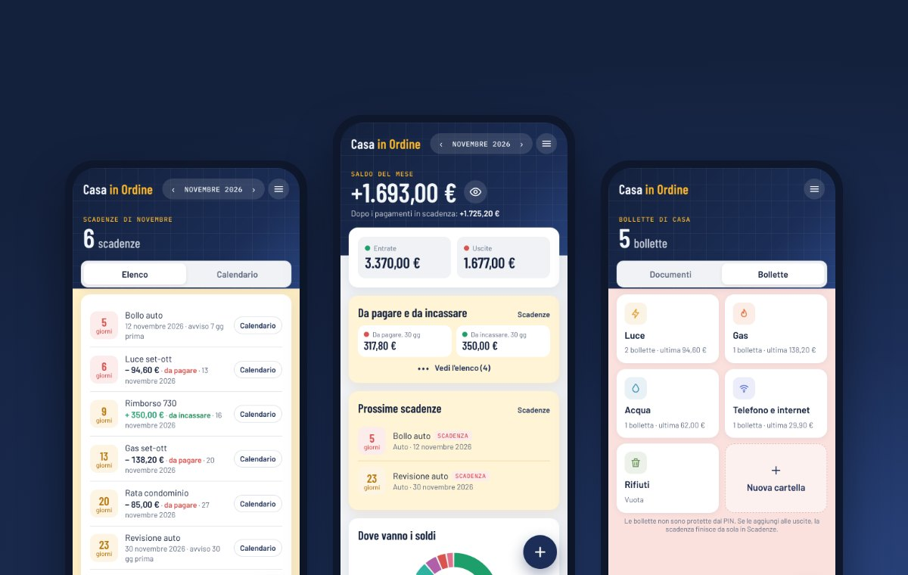
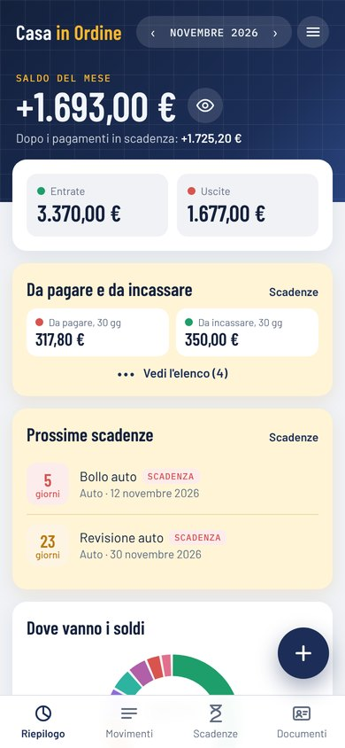
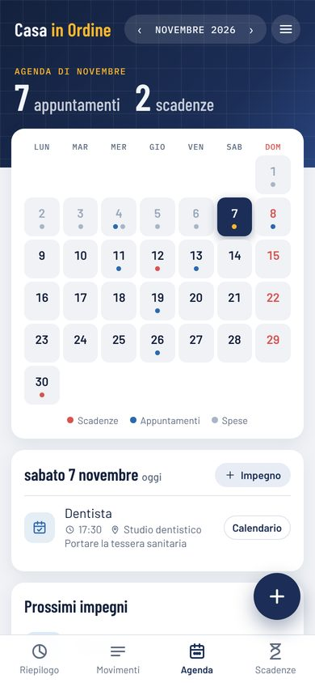
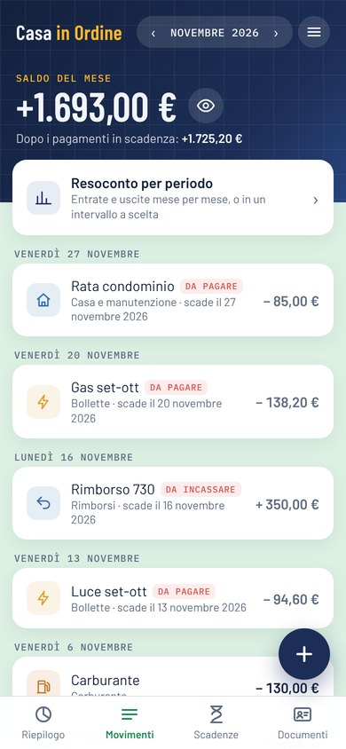

A cosa serve
L'ho fatta per casa mia: tenere sotto controllo le spese del mese, non dimenticare il bollo dell'auto o il rinnovo dell'ISEE, e avere sotto mano gli impegni della famiglia. Poi ho pensato che potesse servire anche ad altri.
- Entrate e uscite divise per categoria, con il saldo del mese, la torta "Dove vanno i soldi" e il confronto degli ultimi 6 mesi.
- Resoconto per periodo: entrate e uscite mese per mese e per categoria, per gli ultimi 3 o 12 mesi, per l'anno o per un intervallo a scelta.
- Scadenze di documenti, auto, fisco e casa, con il conto alla rovescia: rosso sotto i 7 giorni, arancio sotto i 30.
- Agenda del mese con appuntamenti, scadenze e spese, e l'elenco dei prossimi impegni.
- Documenti di famiglia: carta d'identità, patente, passaporto e tessera sanitaria, con numero, scadenza e foto fronte e retro. Puoi proteggerli con un PIN: vengono cifrati e solo chi conosce il PIN può vederli.
- Promemoria tramite il calendario del telefono: un tocco su "Calendario" e l'avviso arriva come quello di un normale appuntamento.



Cos'è una web app
Casa in Ordine non si scarica dal Play Store o dall'App Store: si apre dal browser come un sito, basta toccare Casa in Ordine. La differenza è che si può installare: compare un'icona sulla schermata Home, si apre a schermo intero senza la barra del browser e funziona anche senza connessione. In pratica si comporta come un'app normale.
Il vantaggio è che non occupa spazio come un'app tradizionale, non chiede permessi sul telefono e si aggiorna da sola: ogni volta che la miglioro, la trovi già aggiornata.
Come installarla
Con Chrome
- Apri Casa in Ordine con Chrome.
- Tocca i tre puntini in alto a destra.
- Scegli Aggiungi a schermata Home e poi Installa.
- Trovi l'icona di Casa in Ordine tra le tue app.
Puoi anche usare il menu ☰ dell'app e toccare Installa sul telefono, quando compare.
Con Safari
- Apri Casa in Ordine con Safari.
- Tocca il tasto Condividi, il quadrato con la freccia verso l'alto.
- Scorri e scegli Aggiungi alla schermata Home.
- Se compare l'opzione Apri come app web, lasciala attiva, poi tocca Aggiungi.
Su iPhone l'app installata ha una memoria separata da Safari: conviene installarla subito, prima di inserire i dati. Se l'hai già usata da Safari come ospite, esporta il backup dal menu e importalo nell'app installata, oppure accedi con Google.
Sul computer funziona allo stesso modo: con Chrome o Edge, nella barra degli indirizzi compare l'icona per installarla. Oppure la usi semplicemente nel browser.
Come iniziare
Alla prima apertura l'app ti chiede come vuoi usarla. Ci sono due strade, e non è una scelta definitiva.
Accedi con Google
I dati si salvano anche nel tuo Google Drive, in una cartella riservata all'app e separata dai tuoi file. Li ritrovi sul telefono, sul tablet e sul computer, basta accedere con lo stesso account. Se cambi telefono non perdi niente.
Continua come ospite
Nessun accesso, nessun dato fuori dal telefono: tutto resta solo su quel dispositivo. È comodo per provare, ma se cambi telefono o cancelli i dati del browser li perdi. Dal menu puoi sempre esportare un backup.
Puoi cambiare idea quando vuoi. Se parti come ospite e poi decidi di collegare Google, dal menu ☰ tocchi Collega Google e i dati che hai già inserito restano e vengono salvati su Drive. Allo stesso modo puoi scollegare l'account e tornare ospite.
Non sai da dove partire? Nella prima schermata c'è anche Prima guarda un esempio: l'app si apre con dati finti, così vedi come funziona prima di inserire i tuoi.
Privacy
Casa in Ordine non ha un server suo: i dati restano sul tuo dispositivo e, se colleghi Google, nel tuo Drive. Io non posso vederli. I dettagli sono nell'informativa sulla privacy.
Suggerimenti e segnalazioni sono benvenuti: scrivi a casainordine.app@gmail.com.